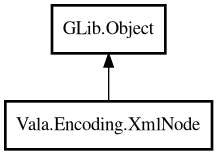

XmlNode
Object Hierarchy:

Description:
public class XmlNode : Object
Represents an XML node (element or text).
Provides access to tag name, text content, attributes, and child nodes.
Example:
XmlNode ? root = Xml.parse ("<root><item>hi</item></root>");
assert (root.name () == "root");
assert (root.child ("item").text () == "hi");
Content:
Methods:
- public string? attr (string attrName)
Returns the value of an attribute.
- public HashMap<string,string> attrs ()
Returns all attributes as a HashMap.
- public XmlNode? child (string childName)
Returns the first child element with the given tag name.
- public ArrayList<XmlNode> children ()
Returns all child element nodes.
- public ArrayList<XmlNode> childrenByName (string childName)
Returns all child elements with the given tag name.
- public string name ()
Returns the tag name of this element.
- public string text ()
Returns the text content of this node.
Inherited Members:
All known members inherited from class GLib.Object
- @get
- @new
- @ref
- @set
- add_toggle_ref
- add_weak_pointer
- bind_property
- connect
- constructed
- disconnect
- dispose
- dup_data
- dup_qdata
- force_floating
- freeze_notify
- get_class
- get_data
- get_property
- get_qdata
- get_type
- getv
- interface_find_property
- interface_install_property
- interface_list_properties
- is_floating
- new_valist
- new_with_properties
- newv
- notify
- notify_property
- ref_count
- ref_sink
- remove_toggle_ref
- remove_weak_pointer
- replace_data
- replace_qdata
- set_data
- set_data_full
- set_property
- set_qdata
- set_qdata_full
- set_valist
- setv
- steal_data
- steal_qdata
- thaw_notify
- unref
- watch_closure
- weak_ref
- weak_unref